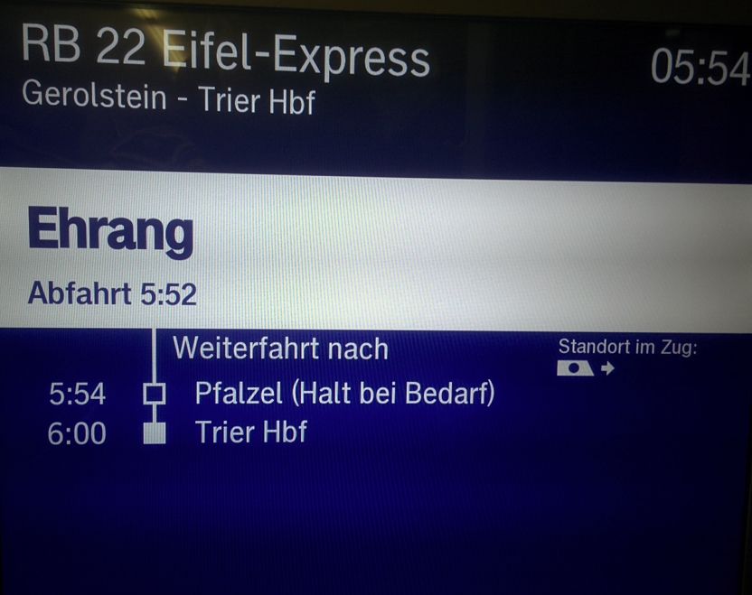

Halt bei Bedarf
assistant
Contents

Transcription
RB [Nummer] [Zugname]
[Ort] - [Ort] Hbf
05:54
[Ort]
Abfahrt 5:52
Weiterfahrt nach
5:54 [Ort] (Halt bei Bedarf)
6:00 [Ort] Hbf
Standort im Zug
Meaning
The display inside a regional train (RB, Regionalbahn). It shows the line, the route and the clock (05:54). The train is at a station and left at 5:52 (Abfahrt). It goes on (Weiterfahrt) to the next stop at 5:54, where it only stops on request (Halt bei Bedarf), and arrives at the main station (Hbf, Hauptbahnhof) at 6:00. Standort im Zug shows where you are in the train.